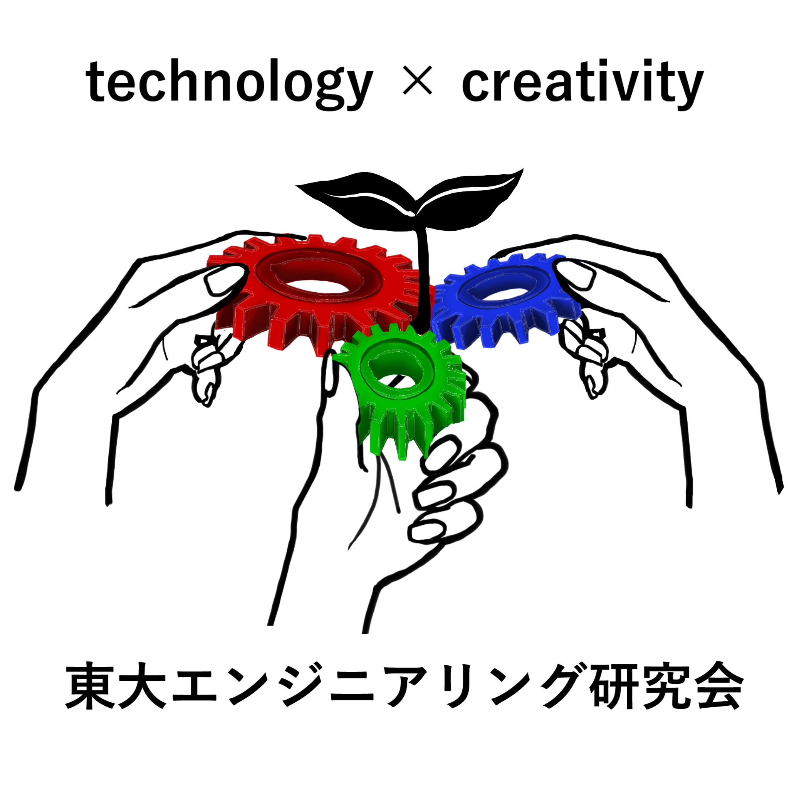

東大エンジニアリング研究会

当コミュニティの概要
東大エンジニアリング研究会は、東大を中心とした開発系コミュニティです。
エンジニアリングを中心に置きながら、ビジネス・起業やデザインなどに取り組む人なども含め、
高校生から社会人まで幅広い人々が所属しています。
「実行のためのコミュニティ」を合言葉に、何かに挑戦しようとしている全ての人を応援すべく、
それぞれが普段行っている開発・研究・学習などの活動をお互いにサポートし合えるような環境を重視しており、
それと同時に、共に挑戦をする仲間を見つけられるようなコミュニティになっています。
基本情報
| 人数 | 101人（Slackの人数） |
|---|---|
| 設立 | 2021年11月 |
| 会費 | 0円 |
| 入会時期 | いつでも |
※情報は2022年5月2日時点のものです。最新の情報はお問い合わせください。
活動内容について
東大エンジニアリング研究会の活動は多岐に渡り、主に以下のようなものがあります。
- 「定例会（進捗共有会）」：それぞれが活動の進捗を発表しFBや質問をし合う
- 「勉強会」：特定のテーマについて学びたい人が集まり深く勉強する
- 「プロジェクト」：特定のプロダクトの開発に向けたチーム開発やハッカソンなどのイベントを開催する
- 「交流会」：親睦を深めるために食事会やプチ旅行に行く
入会・お問い合わせ
東大エンジニアリング研究会への入会を希望される方は、各種SNSからご連絡をください。
担当者とのやり取りの後、問題なければSlackにご招待いたします。
（コミュニティ運営の都合上、Slackへの参加をお断りする場合がございます。）
Slackにご参加いただいた後、正式入会フォームをご提出していただくことで正会員となります。
活動や入会に関するご質問や、企業様・他学生団体様からのご協業のご提案などは、
各種SNSまたはHP上のお問い合わせからお願いいたします。
お問い合わせはこちら
ビジョンについて
comming soon!
代表挨拶
comming soon!
メンバー紹介
comming soon!
ロゴ紹介
当コミュニティのロゴは、当コミュニティに所属する五十嵐美沙さん（Instagram）さんに作成していただきました。
このロゴが表現していることは以下の通りです。（五十嵐さんのお言葉より引用）
・エンジニア系をメインとしつつ起業やデザインなど様々な分野の人が交流できる場所ということ。
→歯車でエンジニア系の技術を表現しつつ全ての歯車の色を変えることで様々な分野の人を表現
→それらが嚙み合わさることで新しいプロダクトが生まれるということを合わさった歯車から生えた芽で表現
→歯車の色は色の三原色ではなくディスプレイの光の三原色を用いた
・実際にこのサークルに参加してみてとてもアットホームな空間だと感じたので手書き風で親しみやすいイメージで描いた
→乾杯しているような構図にすることで気楽な交流の場を表し、一方で全体的に落ち着いたデザインにすることで実際にスキルを持って良い意味で穏やかに真面目に活動しているような印象を表した
会員専用サイト
comming soon!